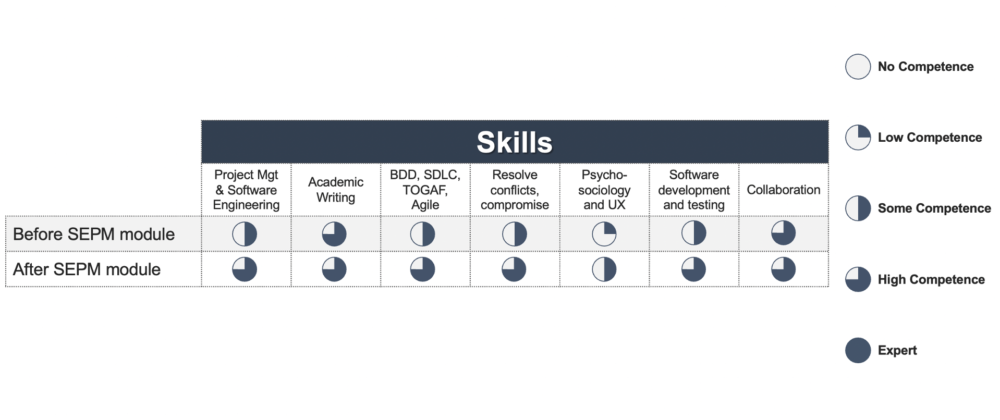

Reflections on Software Engineering Project Management

In this individual reflection, I outline the knowledge, skills, and lessons I gained by undertaking the “Software Engineering Project Management” module, as a part of my Master’s degree course in Computer Science at the University of Essex. Moreover, I describe how I improved my skills in project management and software engineering by leveraging Agile (Scrum) (Fowler & Highsmith, 2001) and Behaviour-Driven Development (BDD) (Solis & Wang, 2011) to design, implement, and test a Python-based application that runs a race car game with three of my coursemates. This game was created using the Python library named ‘pygame’ (McGugan, 2007) and tested via the ‘pytest’ framework (Okken, 2022). I found this project intellectually stimulating and thoroughly enjoyed my productive interactions with my colleagues, with whom we divided and conquered very well from the start to the end of the project. I pondered on the lessons learnt from the work within this team to build a fully functional application that met the requirements of key user personas, such as the producer, the guardian (e.g., a parent), and the child (the user of the remote-controlled race car game). I will describe how I improved my project management and software engineering skills, especially an effective and efficient Agile practice (Fowler & Highsmith, 2001) and automated testing, including linting/code quality- (Kannan et al., 2022) and security-related checks (Peng et al., 2019). Furthermore, I enhanced my soft skills, such as empathy, collaboration, time management, and presentation.
To make sure that my key takeaways and reflections are narrated from a logical perspective, I used the nursing-like methodology of Rolfe et al. (2001) in outlining them to ensure I could draw actionable insights from my experience during this module and team work to enhance my technical/hard and soft skills. This process was necessary, because project management for software engineering does not have any structured ways to capture such reflections, apart from a verbal retrospective in Scrum (Fowler & Highsmith, 2001).
I uploaded all artefacts on GitHub at this link, which include devising, developing, and testing of the codes, as well as various activities carried out and discussions held during the module. Furthermore, the race car game-based application I built and tested with my coursemates as a part of an assignment is available on GitHub at this link. As a part of this Python-based race car-related application, I added all tests-related files I wrote for automated unit testing under this directory on GitHub; I created all of them except for those in the ‘test_analytics.py’ and ‘test_game.py’ that Alberto created after my initial unit tests, thus based on my guidance. The collaboration with my colleagues throughout this project established a fruitful trust-based working relationship, which was key to a successful project management and delivery. Furthermore, I implemented and such unit tests via ‘pytest’ and automated security scans via the ‘bandit’ and ‘safety’ open-source libraries in Python (Peng et al., 2019) by including them in the GitHub Action as per this file on GitHub. I leveraged the listing tool or library named ‘pylint’ in Python for code quality checks (Kannan et al., 2022) and automated these too by adding it as a separate linting check-related stage of the CI/CD pipeline to the above-mentioned GitHub Action. Automating unit testing, security checks, and linting/code quality checks via GitHub ensured full visibility of all test reports to the entire team, thus fostering transparency and cooperation further in the team.
Differently from the design report, in this software engineering project, due to time constraints, we did not manage to implement the parental control functionalities. Nevertheless, as a team, we focused on implementing and testing the key functional requirements of the game-related application, thus resulting in a fully functional, user-friendly race car game that fosters diversity in car racing. Leveraging empathy with each other, we have been glad to complete the project to the best of our skills, possibilities, and within such tight deadlines.p>
As kindly noted by the lecturer, we focused on implementing relevant analytics to ensure reports of the game are created and stored, as well as I implemented a centralised logger to have full auditability of the race car game-based application, which are two forerunners of the parental control functionalities that could be implemented as a part of future work.
Nevertheless, in this team work, I was satisfied of having been able to communicate and divide and conquer effectively with my team members, thus leveraging each other’s skills and experience wisely and productively throughout the project. I understood and appreciated how important the Agile principle of creating a ‘self-managing team’ (Fowler & Highsmith, 2001) is to minimise unnecessary administrative work and dedicate to develop the key functional components of the software. Thus, prioritising meeting the end users’ requirements and ensuring a smooth user experience are pivotal in the success of a software engineering project. I took full ownership of my tasks and demonstrated initiative in delivering further tasks, such as implementing a central global logger and additional unit testing of other members’ codes, such as the ‘battery.py’, ‘remote.py’, and ‘car.py’ files, which involve quite complex but key functionalities of the race car game that other team members were unable to test. Thus, I was delighted and felt useful by being able to help my team further in this capacity.
Moreover, I used the software engineering-related activities in Codio during the module to add value to our team’s project, such as leveraging the linting tool ‘pylint’ (Kannan et al., 2022). Moreover, I genuinely went above and beyond by automating this code quality check via GitHub Actions, thus embedding it as a separate stage in the CI/CD pipeline. The collaborative discussions with my peers both on the VLE platform and on Slack (our main communication channel during the project), as well as on Zoom, were pivotal to build and foster comradery, which was a key factor that led to a successful cooperation and project delivery, besides dividing and conquering based on each member’s skillset and experience./p>
To quantify how my relevant skills were improved via the lessons learnt in this module on Secure Software Development, please see my skills matrix in Fig. 1. below.
Figure 1. How my relevant skills were enhanced by undertaking the ‘Software Engineering Project Management’ module.
References
Fowler, M., & Highsmith, J. (2001) The agile manifesto. Software development 9(8): 28-35.
Kannan, J., Barnett, S., Cruz, L., Simmons, A., & Agarwal, A. (2022) MLSmellHound: a context-aware code analysis tool. In Proceedings of the ACM/IEEE 44th International Conference on Software Engineering: New Ideas and Emerging Results (pp. 66-70).
McGugan, W. (2007) Beginning game development with Python and Pygame: from novice to professional. Apress.
Okken, B. (2022) Python Testing with pytest. Pragmatic Bookshelf.
Peng, S., Liu, P., & Han, J. (2019). A Python security analysis framework in integrity verification and vulnerability detection. Wuhan University Journal of Natural Sciences, 24(2), 141-148.
Rolfe, G., Freshwater, D. & Jasper, M. (2001) Critical reflection in nursing and the helping professions: a user’s guide. Basingstoke: Palgrave Macmillan.
Solis, C., & Wang, X. (2011) A study of the characteristics of behaviour driven development. In 2011 37th EUROMICRO conference on software engineering and advanced applications (pp. 383-387). IEEE.